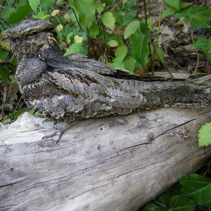

L'engoulevent d'Europe
Nom scientifique :
Caprimulgus europaeus
Longévité :
8 ans
Aire de répartition :

Biotope :
L'engoulevent d'Europe fréquente les friches, les bois clairsemés, aussi bien de feuillus que de conifères et les coupes.
Comportement :
C'est un chasseur d'insectes et surtout de papillons évoluant au crépuscule ou durant la nuit. Ses heures d'activités en font souvent une victime de la circulation nocturne. Le jour, il se repose couché à terre ou sur une branche. L'homotypie de l'engoulevent d'Europe font de lui un oiseau difficilement observable.
Nourriture :
Il se nourrit d'insectes et de papillons qu'il capture en vol au crépuscule.
Reproduction :
Le couple d'engoulevents fréquente souvent le même site chaque année. Il arrive habituellement à la mi-mai. Dès son arrivée, le mâle parade au-dessus de la femelle, ailes et queue largement déployées afin de lui dévoiler ses éclatantes taches blanches. Il lui arrive également de relever les ailes et de les rabattre sèchement en produisant un bruit semblable à un claquement de fouet. A la fin mai, la femelle pond deux oeufs de couleur blanc-crème avec des marbrures brunes et grises. Il n'y a pas de nid et les oeufs sont déposés à même le sol. Les deux adultes se relaient la nuit pour couver afin que chacun puisse chasser, mais la femelle couve seule pendant la journée. Le mâle couve plutôt à l'aube et au crépuscule afin de permettre à sa partenaire de s'absenter. L'éclosion a lieu au bout de 18 jours et les poussins sont nourris d'insectes par les deux parents. Toutefois, le mâle peut s'en charger seul si la femelle est occupée à une seconde ponte. Les jeunes sont précoces et commencent à sortir du nid au bout d'une semaine. A l'âge de 17 ou 18 jours, ils sont aptes à voler et ils sont prêts à entamer la longue migration vers l'Afrique.